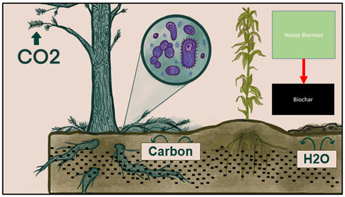
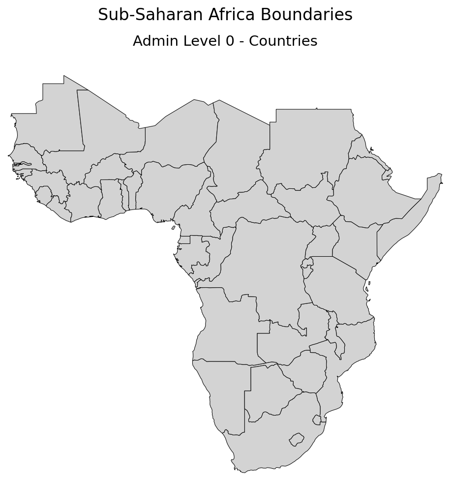
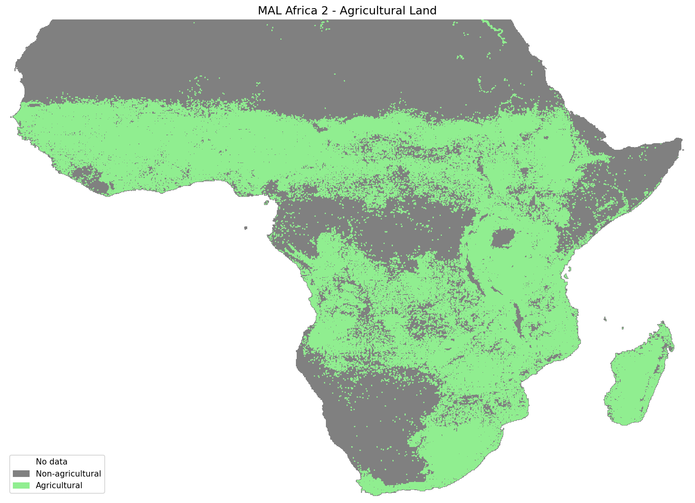
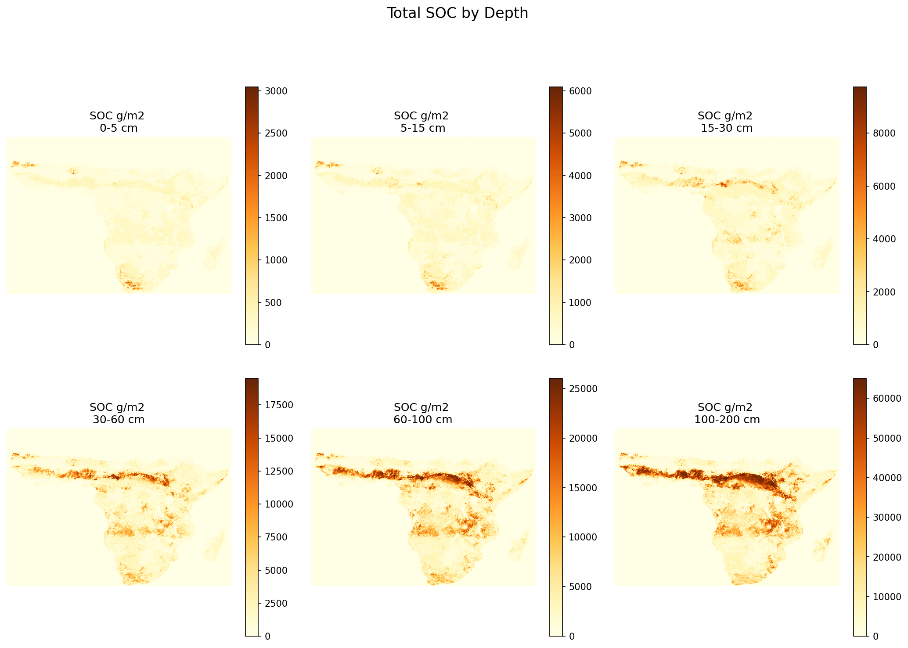
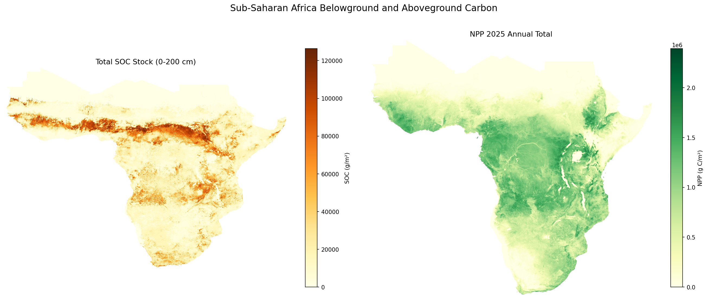
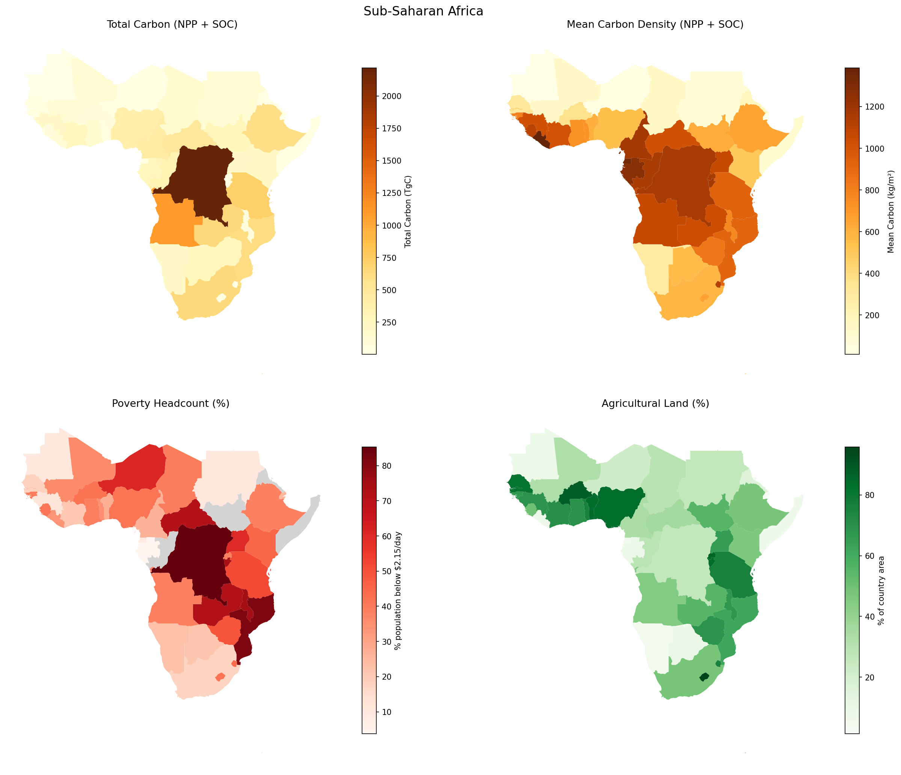
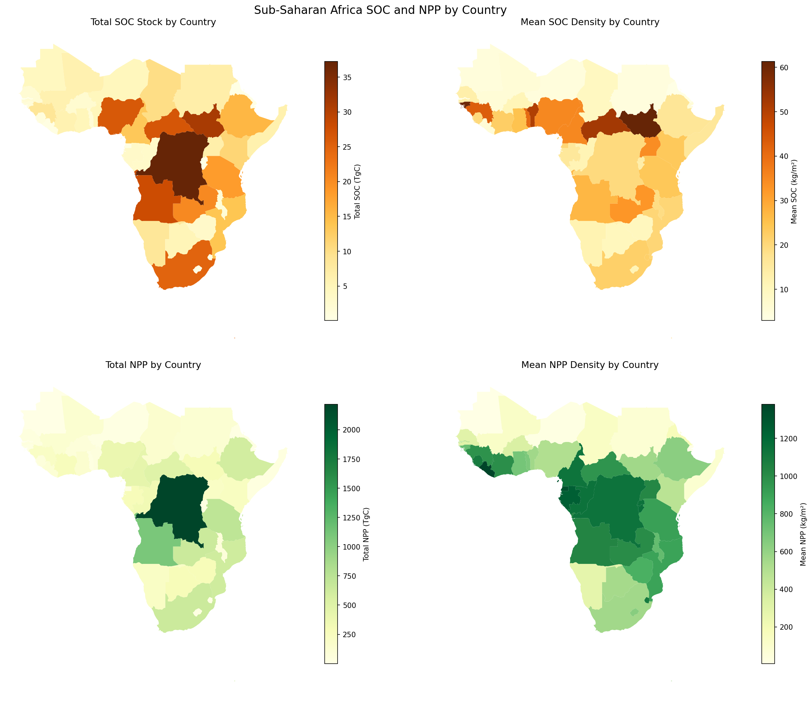

Carbon sequestration is the act of removing carbon dioxide from the atmosphere to store it in either a natural or artifical sink. Carbon dioxide, as one of the greenhouse gases, worsens the impact of climate change. Sub-Saharan Africa is one of the regions that are disproportionately impacted by climate change, with harshening weather conditions negatively affecting agriculture in the area. Climate change exacerbates the existing poverty faced by people who rely on their farms to support their family. 
This project takes a look at the baseline biological carbon sequestration in Sub-Saharan Africa via soil organic carbon and net primary production (NPP). Additionally, it considers the value of implementing carbon crediting programs for the benefit of smallholder farmers based on the country's poverty level.
The project is inspired by my previous work with the Penn State PlantVillage lab, which has carbon capture cubes as one of its focuses to support smallholder farmers in Africa. Carbon capture cubes combine agroforestry, biochar, and mycorrhizal fungi to improve soil quality while sinking carbon. This project does not delve deep into calculating the carbon sinking potential of this practice, as the amount of carbon stored is dependent on the species of plant and fungi used, as well as the biochar production method. Future research to review these factors would highlight the most efficient species and methodology would be beneficial.
My primary data sources are the Food and Agriculture Organization's WAter Productivity through Open-access of Remotely sensed derived data (WaPOR) and International Soil Reference and Information Centre (ISRIC). I utilized WaPOR for their monthly net primary productivity (NPP) raster data, which serve as the basis for the aboveground carbon stock. For belowground carbon, ISRIC provides soil organic carbon (gC/kg) and bulk density (kg/m3) layers, which are separated into six soil depth layers. Additionally, ISRIC provides agricultural land data which is used to assess arable land suitability. To aid in the analysis, I also used a vector layer of Sub-Saharan country boundaries from Amazon Web Services' Natural Earth dataset and country-level poverty headcount data from the World Bank API. All data processing was done using Amazon Web Services (AWS)'s E3 instance, with data stored in an S3 bucket. Python was used for data processing and analysis.
For the boundary data I read in only contiguous Sub-Saharan Africa countries, which resulted in 43 countries.
   
I chose a choropleth map to visualize the distribution of carbon stocks and poverty rates across Sub-Saharan African countries. This makes it easier to compare across the different countries. Though, an additional interactive choropleth map was created to allow users to toggle between the different layers. This also makes it easier to view values specific to the country the user is interested in. The static choropleth maps below show the distribution of carbon stocks, poverty rates, and agricultural land across Sub-Saharan Africa.
 
| Statistic | Poverty Headcount (%)* | Total SOC (TgC) | Mean SOC (kg/m²) | Total NPP (TgC) | Mean NPP (kg/m²) | Total Carbon (TgC) | Mean Total (kg/m²) | Agricultural (%) | Agricultural Area (km²) |
|---|---|---|---|---|---|---|---|---|---|
| Mean | 39.06 | 8.69 | 21.25 | 272.03 | 695.10 | 272.03 | 716.35 | 48.97 | 29.07 |
| Std | 21.21 | 9.80 | 15.29 | 391.26 | 405.51 | 391.26 | 410.55 | 28.62 | 29.30 |
| Min | 3.80 | 0.04 | 2.94 | 0.17 | 6.17 | 0.17 | 11.02 | 1.40 | 0.04 |
| 25% | 22.45 | 1.73 | 10.58 | 30.88 | 395.32 | 30.88 | 402.93 | 26.45 | 4.29 |
| 50% | 39.00 | 4.87 | 18.92 | 141.19 | 703.64 | 141.19 | 728.55 | 49.84 | 20.56 |
| 75% | 47.35 | 12.34 | 25.94 | 311.19 | 1,029.82 | 311.19 | 1,060.47 | 73.13 | 47.62 |
| Max | 85.30 | 37.26 | 61.34 | 2,217.08 | 1,379.76 | 2,217.08 | 1,385.41 | 95.79 | 99.65 |
*Poverty headcount data is unavailable for South Sudan, Somalia, Eritrea, and Republic of the Congo.
| Country | Mean Carbon Density (kg/m²) | Poverty Headcount (%) | Agricultural (%) |
|---|---|---|---|
| Top 5 — Lowest Carbon + Highest Poverty + Highest Agricultural % | |||
| Burundi | 26.17 | 74.2% | 83.90% |
| Burkina Faso | 80.95 | 42.1% | 88.39% |
| Lesotho | 18.44 | 41.9% | 95.79% |
| Zimbabwe | 284.84 | 49.2% | 68.61% |
| The Gambia | 3.89 | 22.0% | 81.15% |
| Bottom 5 — Highest Carbon + Lowest Poverty + Lowest Agricultural % | |||
| Namibia | 206.98 | 22.9% | 4.99% |
| Guinea | 201.45 | 11.7% | 69.01% |
| Cameroon | 441.49 | 26.7% | 33.94% |
| Gabon | 269.63 | 3.8% | 9.01% |
| Equatorial Guinea | 29.19 | 8.8% | 5.56% |
Values are bolded based on their ranking in each column.